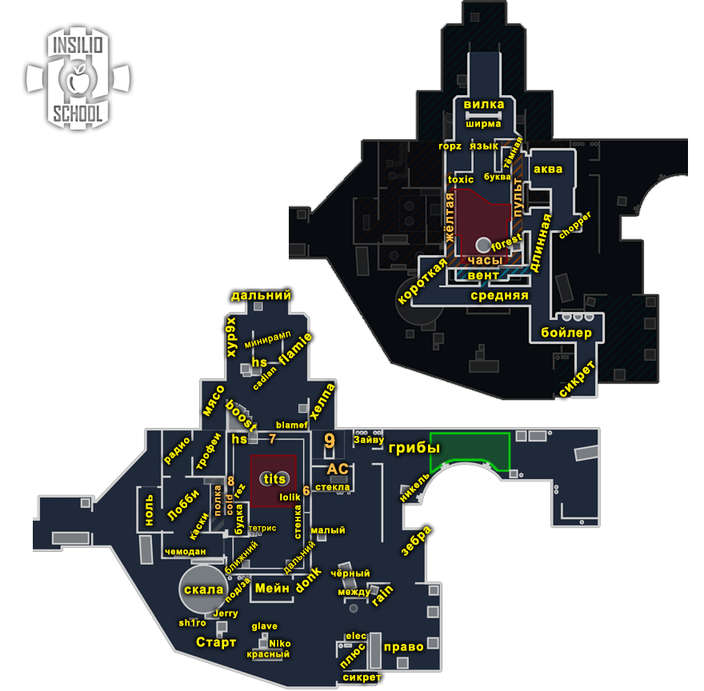
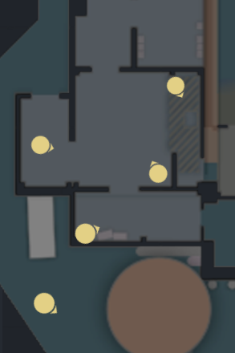
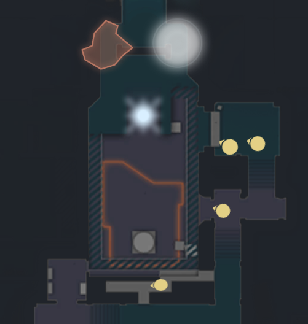
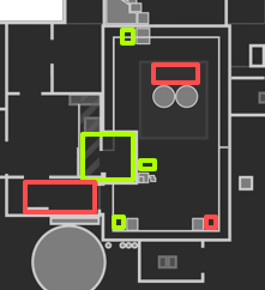
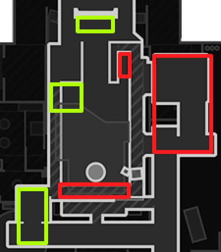
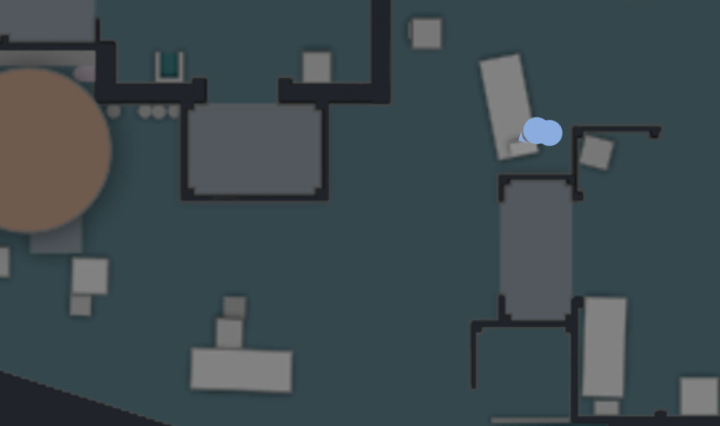

Nuke
Дефолты, роли, выходы, ретейки, пост-плент, комбинации и экономика раундов
Общие правила
Общие правила атаки
- Если у КТ нет AWP, играть контактнее.
- На позднем тайминге играть через центр в контакт.
- Первым играет большинство.
- Люркеры должны контачить, если кор плохо разменялся.
- Ставить бомбу под тиммейта или зону.
- Когда КТ начал дефать, считать секунды.
- При заходе на точку следить за кучностью.
- Считать смоки, которые тратит КТ.
Общие правила защиты
- Последний смок всегда на бомбу.
- Ситуации 2в1 играть вместе.
- Первым играет большинство (на ретейк).
- В меньшинстве нужно рисковать.
- В большинстве нужно сыграть от зон, без риска.
- Против +W тратим все антираш-гранаты, пикаем.
- Если под одной точкой агрессия, под другой играем на сейв.
Правила Nuke
Правила атаки на Nuke (заголовки) T
- Нужно бить стёкла, чтобы всегда могли дать гранаты, не спалившись.
- Рамп: всегда выходим направо, один игрок даёт молик в 9ку.
- Играем Б низ: занимаем дабл. Не можем занять, плент в 2Д.
- При дефолте напрягаем дверь, чтобы КТ волновались за вент.
- Траектория выхода с будки.
- Против плохого бая не играем соло радио.
- Если кидаем дефолтную стенку, всегда тратим первый смок.
- Если играем контакт дверь, 1 из 3 игроков занимает вент и забирает 9ку.
- Игрок улицы прочекивает прыжком/стрейфом КТшника в сикрете/за красным.
- План Б на раунд, который может меняться.
- Необходимо знать стенку смоков, хотя бы одну.
- Первым (+W) играть улицу только в паре. Соло можно играть вторым темпом.
- Всегда дочекивать плент на А, даже если убили в этой зоне игрока.
Правила защиты на Nuke (заголовки) CT
- Падать в вент, если прошли сикрет. Либо через рамп, если потеряли момент.
- Блочить дверь смоком, играть от этого на А.
- Больше 1 смока на улицу не тратим (в основном за красный).
- Заходить в лобби, если долго нет контроля улицы либо нет инфы по ней.
- На улице не задерживаемся, если нет сетапа.
- Очень важно сейвить ХЕ на улице, чтобы ревилить стенки смоков.
- Рамп-игрок должен играть на отдачу, если нет хелпующего.
- В начале каждого раунда договариваться, как начинаете на А.
- Игрок двери может стартовать через мейн, если есть первая респа.
Позиции на карте

Названия позиций, которые встречаются в материалах:
| Зона (группировка условная) | Названия из материалов |
|---|---|
| Точка А (верх) | мейн, 9ка, будка, тетрис, дверь/двери, плент, ближний и дальний вент, за ящиком (hs), гараж, крыша, скала, админка, грибы, сикрет, красный, чёрный |
| Точка Б (низ) | темная, дабл двери, сингл (короткая), токсик, рамп (ширма), дефолт + торт (часы), аквариум, нычка |
| Середина | улица, лобби, ноль (радио), Т-респ, грузовик, девайс |
Термины и основы дефолта
Термины
| Термин | Значение |
|---|---|
| Дефолт | Расположение игроков по карте во время обычного раунда. Часто играется, чтобы понять, как играет противник на карте или на её участках. |
| Кор (ядро) | Основная сила команды: 3+ игрока, которые играют вместе. |
| Зоны карты | Места, контроль которых в данном раунде и игровой момент даёт преимущество. |
| 3-1-1 (цифры) | Количество игроков под точкой А, на миду и на точке Б (очерёдность зависит от карты). Nuke нестандартная, поэтому здесь это Лобби-Улица или Улица-А-Рамп. |
| Контакт | Движение до первого столкновения с противником, при котором издаётся минимум шума и не используются гранаты. |
| Люрк | Игрок, отвечающий за свою зону. Если команда выходит через его зону, он обычно выходит первым. Если команда играет через другую зону, он закрывает спину тиммейтам или играет в спину противникам через свою зону. |
| Микро | Умение контролировать персонажа: движение, аим, правильное использование гранат. |
| Макро | Умение понимать ситуацию в игре и принимать решения: играть пассивно или агрессивно, быстро или медленно и т.п. |
Введение
Большинство хороших команд играют первые бай-раунды от дефолта, особенно если не знают, как играет соперник. Это проверенная временем тактика, чтобы не нарваться на задумки соперника. Качественные коллективы за счёт дефолта переигрывают многих соперников, не показывая скрытый пул заготовок.
Три элемента дефолта
- Старт. Собираем информацию и отжимаем зоны карты, получаем контроль над ними.
- Середина. Принимаем решение (мид-кол), куда идти дальше. К этому моменту зоны должны быть отжаты либо идёт борьба за них.
- Конец. Постановка бомбы и пост-плент ситуации.
Типы дефолтов
- Обычный. Играем спокойно, от информации, не торопимся, отжимаем всё под гранаты и работаем вместе. При необходимости реагируем по информации, отменяем план и выходим туда, где соперник предлагает минимальное сопротивление. Пример: КТ показывают агрессию на миду (для этого нужно минимум 2-3 КТшника), мы быстро реагируем в точку, если есть возможность.
- Агрессивный. Задача отжать зону. Даже если по информации КТ дерутся за мидл, мы принимаем этот файт и деремся за нужную зону. Главное убить соперника, то есть навестись на голову быстрее него. При этом грамотно используем гранаты и двигаемся, а не просто бежим W. У нас есть мысль на раунд, которую мы реализуем.
Дефолты
Дефолт Т 4-1 (Лобби-Улица) T
Видео в оригинале: вариант 1 и вариант 2 (0:00 и 1:44).
Уличник создаёт иллюзию активной игры на улице и занимает сикрет. Необходимо дать дефолтную либо диагональную стенку. Кор стоит на нуле, играет либо в рамп, либо в А. Если играем рамп, уличник идёт низ. Если играем А, уличник играет Мейн-9ку. Четвёрка игроков никогда не палится, что их много в лобби. Свой дефолт исполняет игрок двери, остальные смотрят поджимы. Один игрок может саппортить: накинуть молик-флешку и т.п.

Большинство
- Доигрываем по инфе.
- Убили рамп либо сикрет: можно играть низ.
- Поймали игрока в нуле-дверях: можно доиграть А.
- Если КТ потратили все смоки на А, отличный вариант доиграть двери.
Меньшинство
- Убили игрока в сикрете: отыграть по инфе (сколько людей на улице?). Если инфы нет: контакт А (у КТ нет смоков), выход рамп (AWP на улице) или переиграть улицу (если позволяет таймер).
- Убили игроков в лобби: играем от инфы игрока улицы. Если он прошёл в вент, можно сыграть рамп или резко двери. Если не прошёл, играем от его инфы: улица к нему или любой другой вариант от него.
Позиционка в лобби при дефолте 4-1
Если есть AWP, он смотрит двери с нуля.

Дефолт Т 1-4 (Лобби-Улица) T
Видео в оригинале.
Атака строится через игру на улице. Игрок в лобби отыгрывает дверь и контролирует прожим нуля от КТ. Кор проходит под любую из стенок в сикрет, дальше играем от разменов.
Большинство
- Убили низ: играем дальше.
- Убили улицу: можно играть под А.
- Нашли килл в лобби: играем от инфы. Пример: «4 в лобби, одного убил», можно играть низ.
Меньшинство
- Полностью играем от информации, где и сколько КТ.
- Даже при 4в5 и убитом игроке лобби можно получить инфу, что КТ прожимает лобби, и среагировать на 1-2 игроков на Б. Не переживаем, играем по ней.
Как доигрывать низ
- Один игрок идёт в сингл, отвечает за дверь и вент.
- Тройка проходит в дабл.
- 2 игрока раскидывают рамп с аквариума (молик + смок), второй в этот момент прикрывает.
- Третий игрок под этот раскид выходит дабл двери.
- Всё должно получиться в тайминг: выход в дабл, раскид рампы с аквы и врыв оттуда же.
- Игрок с сингл-двери может пикнуть на инфу при необходимости (в основном он контрит вент).

Дефолт КТ 1-3-1 (Улица-А-Рамп) CT
Видео в оригинале: вариант 1 и вариант 2 (0:00 и 1:05).
- Каждый игрок отвечает за свой квадрат (зону).
- Самый активный игрок держит улицу.
- Один игрок отвечает за рампу.
- Двойка на А делится на игрока двери и опорника А, который смотрит будку.
- Снайпер играет от 9ки, его задача хелповать каждой зоне (А, рамп, улица).
- Всегда кто-то должен спускаться вниз, если туда могли промутиться (в основном рамп-игрок или двери).
Роли
В оригинале к каждой роли есть видеопример игры про-игрока.
Роли Т T
| Роль | Примеры игроков | Задача |
|---|---|---|
| Игрок улицы | donk, niko, rain | Делать движ на улице, знать все тайминги, брать на себя инициативу и дуэли. Проходить в сикрет, постоянно растягивая защиту. |
| Игрок лобби | ropz | Контролировать лобби и собирать информацию по защите, играть свой дефолт (бить стёкла + дверь, падать в вент, если дают). Не умирать первым, отлично крысить. |
| Саппорт улицы | chopper, aleksib, twistzz | Знает все гранаты на карте, накидывает смоки игроку улицы, иногда играет вместо него либо вторым номером после. Создаёт моменты для остальных. |
| Саппорт лобби | b1t, mezii | Играет в паре с игроком двери, контролирует пуш будки и рампы. Создаёт фон в рампе, выходит туда первым, если играете кором. |
| Авапер | m0NESY, ZywOo | Самый сильный снайпер на этой карте, тот, кто хорошо играет с рифлой. Можно пассивно играть на гранатах (А-улица) либо активно с AWP или рифлой на улице, выбор за вами. |
Роли КТ CT
| Роль | Примеры игроков | Задача |
|---|---|---|
| Игрок улицы | donk, rain, Niko | Не пропускать на халяву игроков по улице. Можно делать что угодно, главное давать демедж и не пропускать без инфы. |
| Рамп | b1t, ropz, zont1x | Держать рампу, уметь её отдавать, грамотно играть ротацию под Б от информации по улице. |
| Ротейт А | Twistzz, chopper | Главное уметь держать дверь, не пропускать в вент без инфы. Хелпать улице при необходимости. |
| Опорник А | magixx, jL, mezii | Всегда в фокусе на А-раш, отлично ладить с игроком двери. |
| Авапер | m0NESY, ZywOo | Главный хелпующий за КТ (А, рамп, улица). В отличие от Т, AWP за КТ решает намного больше. |
Выходы за Т
Лекция 2, видео в оригинале.
А быстрый T
Тратим дефолтные гранаты, чтобы замаскировать быстрый выход: смок на старт, смок годсент, бьём стёкла.
- Первым действует игрок с двери, под флеш + смок мейн.
- Кор доигрывает будку под молик + флеши плент. Задача: резко выйти и занять все ближние позиции для контроля врыва (плент + вент).
- Кто накидывал гранаты с крыши, забирает спину.
А раскид T
Плотный раскид А, где кидаем фейк-стенку на улицу.
- Молотов за вент + молотов в плент.
- Всегда нужен смок в мейн + 3-4 флеша на выход (обычно кидают в плент + мейн).
- Выходим 3 будка + 1 дверь, последний игрок забирает спину.
А сплит T
- Откидываем дефолтные гранаты (смок двери + стенка улица).
- Под это два игрока мутятся в мейн, один контролит дверь и играет по игрокам в мейне, двойка играет будку.
- Можно добавить гранаты по ситуации и инфе (пример: спалили КТшника за дальним, дали туда молик с двери).
Проходка улица, доигровка А T
- Играем дефолт 1-4, отдаём стенку смоков, под неё занимаем гараж и под 9ку, дальше играем от киллов, в основном заканчиваем под А (9ка + мейн + будка).
- Обязательно даём смок на мейн: даёт больше сейва.
- Если AWP распикивает 9ку, нужно, чтобы ему забрали сикрет.
Проходка улица, доигровка Б T
- Тот же дефолт, главное дать стенку + смок двери для фона и молотов в дабл двери.
- Как играть внизу, показано в дефолте 1-4. В этом видео показан второй вариант, через сингл: он сложнее и менее эффективен на дистанции.
Выход Рамп, доигровка Б T
- Грамотный выход рамп под фейк-стенку на улице.
- Самое главное: флеши на фонарь, внизу занимаем дабл двери и забираем «халявный раунд».
Ретейк
Точка А CT
- Идеального ретейка А «по книжке» нет, главное играть от зон, которые у нас есть. В основном это мейн + 9ка, с люрком («противным»), который играет с нуля.
- Обязательно даём флеш с 9ки. Игроки с мейна могут потратить смок в двери для безопасности.
Точка Б CT
Обычно кор играет через рамп либо сикрет.
- Через рамп, при 2+ смоках: отдаём смок на акву + дабл (не забываем про смок на бомбу). Игрок с вента играет «противного».
- Через сикрет: стараемся играть масс-дабл двери + акву, гранаты отдаём по ситуации. Ретейк в основном похож на выход Т под Б: раскид рамп + молик нычка.
Пост-плент позиции
Точка А
| Приоритет | Позиции |
|---|---|
| 1 (красные) | Двери, плент, дальний вент |
| 2 (зелёные) | Будка, тетрис, ближний вент, за ящиком (hs) |

Точка Б
| Приоритет | Позиции |
|---|---|
| 1 (красные) | Тёмная, дабл двери, дефолт + торт (часы) |
| 2 (зелёные) | Сингл (короткая), токсик, рамп (ширма) |

Парные комбинации
К каждой комбинации в оригинале есть видео.
| Комбинация | Описание |
|---|---|
| Мув m0NESY | Агрессивный мув для снайпера: пик двери под ХЕ. Отлично работает против КТшников, которые любят стартовать через мейн. |
| Буст гараж | Лучшая парная реакция на смок гараж. На улице подобных комбинаций много, всегда можно сделать контр-буст под смок. Есть и базовый буст за чёрным (схема ниже). |
| Игра под глубокий молик в двери | Нестандартная игра под А: игрок двери играет агрессивнее обычного. Хороший потенциал прожима, ломает дефолт сопернику. |
| Неждан Рамп | Простое и эффективное решение: сыграть без гранат резко рамп. Если против вас один рампер, высокий шанс на размен. |
| Прожим Рамп под AWP | Лучшая комбинация под AWP на рампе. Базовый молотов, чтобы соперник ничего не понял, затем выпад от AWP и прожим свободной зоны от рампера. После этого играете дальше либо снайпер уходит назад. В комбинации не задерживаться. |
| Ревил дверь за КТ | Сильная комба для сбора инфы + энтри. |
| Выпад улицы под флеш за КТ | Агрессивный выпад на улице. Хорошо работает на форсе, на бае тоже можно, главное вовремя отойти. |
| Мув ropz'а | Мув для игрока рампы: пушить под флеш и без неё. Есть вариант под ХЕ. Идея: энтри с потенциальным прожимом лобби. |
| Пуш Лобби | Агрессивный мув. Чтобы занять лобби: два игрока рамп + один будку, игрок двери накидывает саппорт-гранаты. Лезть на крышу не обязательно, по ситуации. |
| Буст на улице | Буст для поиска энтри на улице. Лучше делать при плохом бае или сейвленном гане: слишком много людей задействовано для фулл-бая. |

Пистолетки, форсы, антифорсы, эко
Пистолетка Т (одна идейная, три варианта) T
В нынешней мете сильные команды играют не 5 разных пистолеток в каждую точку, а одну идейную с разными вариантами розыгрыша, чтобы соперник не понял, как вы доигрываете. К тому же наигрывается много ситуаций. Во всех вариантах всегда даём смок на мейн, и один игрок агрессивно играет под него на улице.
| Вариант | Суть |
|---|---|
| 1 | Отдаём смок мейн, игрока с P250 отправляем на улицу искать фраг и проходить в сикрет. Взрываем дверь + даём молик под вент, тройка срывается в рамп. По дефолту сплит Б. Если игрок улицы убьёт мейн и найдём килл в лобби или под 9кой, можно доиграть А. |
| 2 | Смок мейн, игрок с P250 также распикивает улицу, но до этого даёт флеш под 9ку игрокам, которые уже на мейне. Затем 3-4 под 9ку (один всегда ждёт мейн), игрок с P250 контролит сикрет. По дефолту сплит Б (бежим под 9ку, потом в рамп), но при ранних киллах можно переиграть на А. |
| 3 | Смок мейн чуть позже. Один игрок с P250 распикивает улицу. Тот, кто отдавал смок, играет под мейн, 2 дверь + 1 будка. Идея: сплит А под стрельбу игрока на улице. Кор в нуле не привлекает внимания. Лучше делать, если раньше играли один из вариантов выше, но как отдельная пистолетка тоже хорошо. |
Пистолетка КТ (смок в дверь + беретты на будке) CT
За КТ важно играть пистолетки от чего-то: стак, пропуск одной зоны, ретейк другой, механизм отхода или сдерживания.
| Вариант | Суть |
|---|---|
| 1 | Старт 3А: один игрок на будке с берреттами, второй кидает смок в двери и играет от 9ки, третий стартует через мейн. По одному на рампе и улице. Задача: принять фаст А. Если выход рамп, игрок с 9ки помогает флешем. Если не успевает, спускаемся в вент (игрок с мейна) и хелпаем с сингла на Б-пленте. |
| 2 | Идея та же, но игрок с будки играет свободнее на А-пленте, так как нет игрока с мейна (можно фокус двери, а не будка). Игрок улицы стартует префом Б-плент (можно вторым рамп). Игрок мейна чекает улицу под флеш и дальше играет от инфы. |
| 3 | Цель: принять А-раш. Старт: 2 под мейном + 1 близко к ним с улицы + 1 на будке с берреттами. При раше рампы через вент быстро играем ротацию под Б. Рампер в этом раунде отдаёт спот и не геройствует. |
Форсы
| Раунд | Суть |
|---|---|
| Т форс 1 | Имитация дефолта в лобби (отыграть дверь), затем пятёркой под стенку вниз. Реализовать тек9 легче всего под Б, внизу главное доиграть правильно. Одно из лучших решений с пистолетами: 3+2 (сингл + дабл). |
| Т форс 2 | Та же идея, но кор играет рамп, а не низ. Хорошо, если часто делаете форс низ или под рампой слабый игрок. Главное правильно выйти рамп. |
| КТ форс 1 | Откинули дефолтные гранаты, затем стак под А. Игрок улицы от мейна, рамп-игрок на хелпе в 9ке. Снайпер смотрит проход улицы. Главное сыграть в паре. |
| КТ форс 2 | Играем от точки А, без улицы. В начале сыграть дефолт (гранаты + показаться снайперу), чтобы атака ничего не поняла. Улицу отдаём и точной инфы нет, поэтому нужен игрок под Б: обычно рамп, может быть и двери. |
Антифорсы
| Раунд | Суть |
|---|---|
| Т антифорс 1 | Стенка улица, хороший выход рамп. После смоков на улицу 4 игрока играют рамп, один раскидывает молик + флеш, остальная тройка выходит по траектории направо, первый всегда с мобильным оружием. Обязательно один докидывает молик под 9ку, чтобы соперник не мог ворваться. Соло-игрок может сыграть люрка либо забрать спину, главное не отдать ган. |
| Т антифорс 2 | Кидаем стенку улица, контролим всю карту (улица + лобби), затем 3 в сикрет и 2 под 9ку. Если нам всё отдают, сплит Б. Если размены на любом участке, можно переиграть (А-выход, А-сплит, прямой Б-выход). |
| КТ антифорс 1 | Отличие от обычного КТ-дефолта: защита отдаёт кроме трёх моликов (улица, рамп, двери) ещё 2 антираш-ХЕ в будку. Игрок улицы играет ближе к А, около мейна. |
| КТ антифорс 2 | Дефолт с идеей на улице: sh1ro с фармой под 2 ХЕ занимает упор улицу. Если резко А, контрим. Рампу при необходимости отдаём, так как рядом нет хелпующего. |
Эко
Т эко (А-раш) T
- Тройка игроков пушит будку, один играет дверь, последний играет свободно.
- Первый игрок взрывает дверь и пушит будку с кором. Один из кора должен иметь смок на потушение.
- Игрок двери даёт смок мейн + флеш в тайминг выхода.
- Свободный игрок (последний) в тайминг накидывает флеш над будкой.
КТ эко CT
- Вариант 1: простой стак Б. Один игрок отдаёт смок двери, четвёрка играет сикрет, чтобы навязать файт на близкой дистанции.
- Вариант 2: стак А. Важно не падать всем вниз, достаточно одного. Мы не даём доп. инфу атаке и всегда можем сыграть ротацию на улицу или рампу.
Памятка для тренировки (консоль)
Ввести в консоль:
map de_nukeПосле загрузки карты:
sv_cheats 1;bot_kick;mp_limitteams 0;mp_autoteambalance 0;mp_roundtime 60;mp_roundtime_defuse 60;mp_freezetime 0;mp_warmup_end;ammo_grenade_limit_total 5;sv_infinite_ammo 1;mp_maxmoney 60000;mp_startmoney 60000;mp_buytime 9999;mp_buy_anywhere 1;mp_restartgame 1Таймкоды записей лекций
Лекция 1 (запись от 29 марта)
| Время | Тема |
|---|---|
| 2:02 | Пара слов от Рачела |
| 5:55 | Введение |
| 16:50 | Начало лекции |
| 19:12 | Общие термины |
| 23:18 | Три элемента дефолта |
| 25:15 | Типы дефолтов |
| 26:02 | Позиции Nuke |
| 27:41 | Дефолт Т 4-1 (1 вариант) |
| 31:40 | Дефолт Т 4-1 (2 вариант) |
| 35:48 | Как доигрывается большинство (4-1) |
| 36:45 | Меньшинство (4-1) |
| 37:47 | Позиционка в лобби при дефолте 4-1 |
| 42:10 | Дефолт Т 1-4 |
| 45:07 / 45:37 | Большинство / меньшинство (1-4) |
| 46:36 | Как доигрывать низ (1-4) |
| 49:13 / 51:48 | Дефолт КТ 1-3-1 (1 и 2 вариант) |
| 54:24 | Про перетяжки |
| 55:06 | Цель дефолта 1-3-1 |
| 57:03 | План Б |
| 58:03 | Роли |
| 59:26 | Т игрок улицы |
| 1:01:57 | Т игрок лобби |
| 1:04:05 | Т саппорт улицы |
| 1:05:39 | Т саппорт лобби |
| 1:07:10 | Т авапер |
| 1:08:55 | КТ игрок улицы |
| 1:10:30 | КТ рамп |
| 1:11:00 | КТ ротейт А |
| 1:11:58 | КТ опорник А |
| 1:12:58 | КТ авапер |
| 1:13:57 | Домашнее задание |
| 1:15:36 | Вопросы |
| 1:27:25 | Дадте про тень |
Лекция 2 (запись от 5 апреля)
| Время | Тема |
|---|---|
| 5:34 | Быстрый А выход |
| 11:02 | А раскид |
| 15:34 | А сплит |
| 19:00 | Проходка улица, доигровка А |
| 22:46 | Проходка улица, доигровка Б |
| 25:43 | Выход Рамп, доигровка Б |
| 29:44 | Ретейки (30:20 ретейк А, 33:35 ретейк Б) |
| 36:52 | Пост-плент (37:40 А точка, 40:06 Б точка) |
| 42:48 | Комбинации |
| 43:58 | Мув m0NESY |
| 45:22 | Буст гараж |
| 47:22 | Игра под глубокий молик в двери |
| 49:40 | Неждан Рамп |
| 52:07 | Прожим Рамп под AWP |
| 54:32 | Ревил Дверь за КТ |
| 55:43 | Выпад улицы под флеш за КТ |
| 57:04 | Мув ropz'a |
| 59:02 | Пуш Лобби |
| 1:02:33 | Буст на улице |
| 1:03:52 | Домашнее задание |
| 1:07:47 | Ответы на вопросы |
Лекция 3 (запись от 12 апреля)
| Время | Тема |
|---|---|
| 5:12 | Общие правила атаки (#1-#8, см. раздел 1) |
| 14:49 | Общие правила защиты (#1-#7, см. раздел 1) |
| 24:45 | Правила атаки на Nuke (#1-#13, см. раздел 2) |
| 45:00 | Правила защиты на Nuke (#1-#9, см. раздел 2) |
| 53:42 | Домашнее задание |
| 55:00 | Ответы на вопросы |
Лекция 4 (запись от 20 апреля)
| Время | Тема |
|---|---|
| 6:48 / 9:36 / 15:40 | Пистолетка за атаку #1-#3 |
| 18:30 / 21:50 / 23:46 | Пистолетка за защиту #1-#3 |
| 27:26 / 30:25 | Форс за атаку #1-#2 |
| 32:26 / 34:34 | Форс за защиту #1-#2 |
| 36:53 / 39:22 | Антифорс за атаку #1-#2 |
| 42:38 / 44:12 | Антифорс за защиту #1-#2 |
| 45:35 | Эко за атаку |
| 47:25 | Эко за защиту |
| 50:20 | Кратко о главном |
| 51:26 | Домашнее задание |
| 54:25 | Ответы на вопросы |